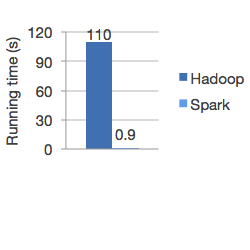
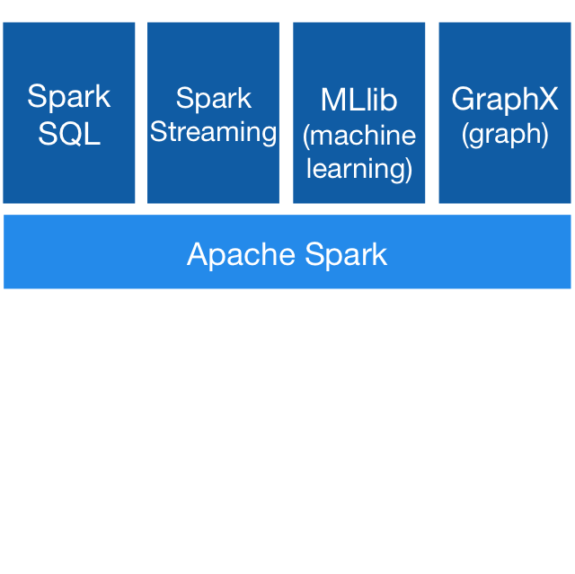

Run programs up to 100x faster than Hadoop MapReduce in memory, or 10x faster on disk.
Write applications quickly in Java, Scala, Python, R. Combines SQL, streaming, and complex analytics.
Spark runs on Hadoop, Mesos, standalone, or in the cloud. It can access diverse data sources including HDFS, Cassandra, HBase, and S3.